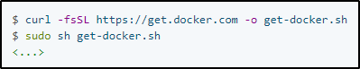

Semplicemente, vai sulla DOC di Docker Community ed installalo sulla tua VM.
Per il nostro caso useremo una VM con Ubuntu:
https://docs.docker.com/engine/install/ubuntu/
Passi:
1) Unistalla le old versions
2) Installa usando il repository
Possiamo installare Docker in tanti modi, ma
possiamo usare un Convenience Script:

Possiamo controllare la versione di Docker, una volta installato:

Per testare se Docker funziona, facciamogli runnare un immagine: